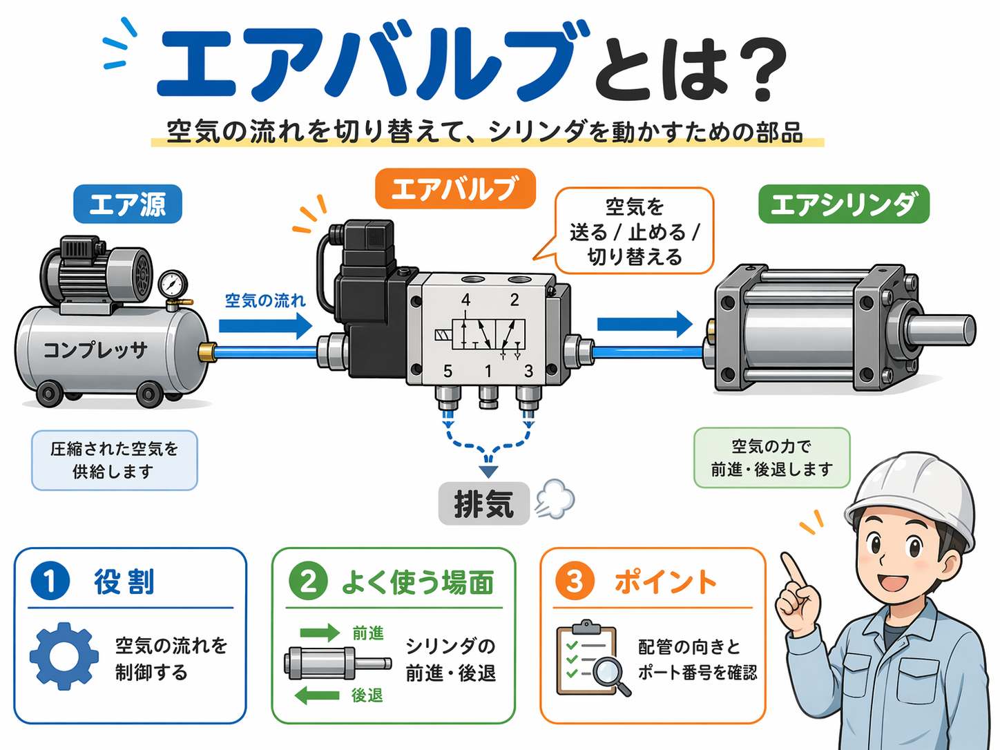
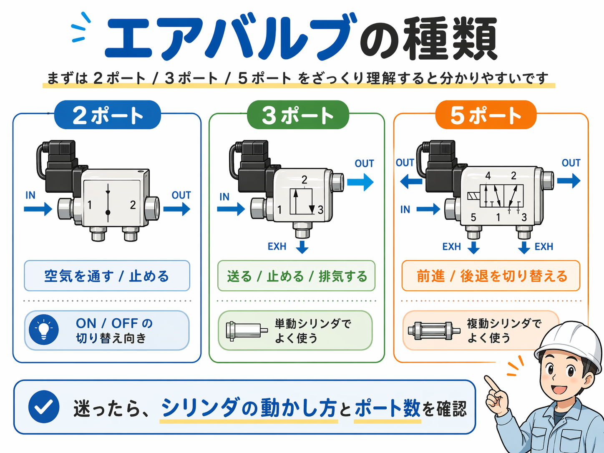

向いている人
- エア機器を触り始めたばかりの人
- エアシリンダとバルブの関係がまだ曖昧な人
- 2ポート・3ポート・5ポートの違いをざっくり整理したい人
- 設備の中で空気の流れを追えるようになりたい人
エアバルブは、圧縮空気を送る・止める・切り替えるための部品です。 まずは「空気の通り道を切り替える部品」と考えると、設備の中でも追いやすくなります。

エアバルブは、圧縮空気を送る・止める・切り替えるための部品です。
現場ではエアシリンダの前進・後退や、エアブロー、チャック動作などでかなりよく出てきます。
最初は「空気の通り道を切り替える部品」として捉えると分かりやすいです。
エアバルブは、コンプレッサから来た圧縮空気を必要な場所へ送ったり、止めたり、別の通路へ切り替えたりする部品です。
電気でいうとスイッチや切替の役目に近いですが、制御しているのは電流ではなく空気の流れです。 設備の中では、エアシリンダを動かす時や、エアブローを出す時、チャックやクランプを開閉する時などによく使われます。
つまりエアバルブは、空気圧機器を動かすうえでかなり中心になる部品です。 難しく見えやすいですが、最初は「どこから空気が入って、どこへ送って、どこから抜いているか」を追うだけでも理解しやすくなります。
必要なタイミングで、シリンダや機器へ圧縮空気を送ります。
使わない時は流れを止めて、不要な動作を防ぎます。
前進・後退のように、空気の向きを変えて動きを切り替えます。
記号やポート番号を見ると難しく感じやすいですが、基本の流れはそこまで複雑ではありません。
設備を見た時も、「このバルブは、どこから空気が入って、どこへ送って、どこから排気しているか」 を追うとかなり理解しやすいです。
現場では、次のような場面でかなりよく見ます。
一番イメージしやすい使い方です。シリンダを前に出す、戻す、という動作をエアバルブで切り替えます。
製品のゴミ飛ばしや清掃用のエアを、必要な時だけ出すために使います。
ワークをつかむ、離す、といった動作にも使われます。
工程ごとにエア機器の動きを順番に変える時にも使われます。
エアバルブ単体で見るより、「何を動かしているか」とセットで見る方が分かりやすいです。 バルブの先にあるシリンダ、チャック、ブローなどを一緒に確認すると、役割がはっきりします。
エアバルブを見始めると、まず出てきやすいのがポート数の違いです。 最初は細かい型式よりも、2ポート・3ポート・5ポートの違いをざっくり整理すると追いやすくなります。
入口と出口の2つで構成されるシンプルなタイプです。役目としては、空気を通す / 止める が中心です。
ON / OFF の切り替え用途に向いていて、比較的イメージしやすい形です。
通す / 止める入口・出口・排気の3つを持つタイプです。空気を送るだけでなく、止めた後に排気までできるのがポイントです。
単動シリンダや、比較的シンプルな動きでよく使われます。
送る / 止める / 排気入口1つ・出力2つ・排気2つの構成がよく使われます。複動シリンダの前進 / 後退を切り替える時に使われることが多いです。
設備でシリンダをしっかり前後動作させている場合は、まず5ポートを見ることが多いです。
前進 / 後退の切替
エアバルブが分かりにくい時は、いきなり細かい型式を追うより、次の順で見るとかなり分かりやすいです。
現場では、エアバルブのことを電磁弁と呼ぶこともかなり多いです。 特にソレノイドで動くタイプは、会話の中で「電磁弁」と呼ばれることがよくあります。
メーカーや型式で見え方が少し違うことがあります。番号だけでなく、配管の接続先も一緒に見た方が安全です。
供給側と出力側を逆に見てしまうと、動きの理解を間違えやすいです。
エアは送る側ばかり見がちですが、排気がどう抜けるかも大事です。ここを見落とすと、動作の理由が分からなくなることがあります。
エアバルブ単体で見るより、どのシリンダや機器を動かしているかとセットで見る方が理解しやすいです。
最初は難しい記号を全部覚えようとしなくて大丈夫です。 それよりも、
この3つを意識した方が、実務ではかなり追いやすいです。
制御や空気圧は、難しく見せようと思えばいくらでも難しくなります。 でも現場で大事なのは、トラブル時に後から見ても追えることです。
その意味でも、エアバルブは「空気の流れを切り替える部品」としてシンプルに捉えるところから始めるのがおすすめです。
エアバルブは、圧縮空気を送る・止める・切り替えるための部品です。 設備ではエアシリンダを動かすためによく使われ、2ポート・3ポート・5ポートの違いをざっくり整理すると理解しやすくなります。
最初は記号を全部覚えるより、
このあたりを追っていく方が分かりやすいです。 エア機器を触り始めたばかりの人は、まずここを押さえておくと次の記事にもつながりやすいです。
エアバルブ単体よりも、シリンダやセンサ、入出力とセットで見ると全体像がつかみやすくなります。